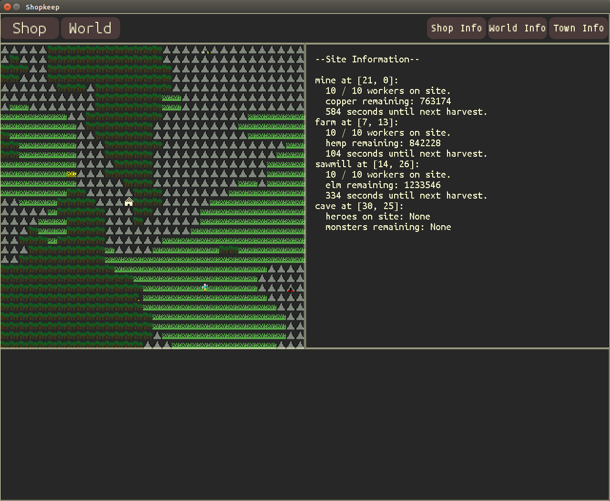
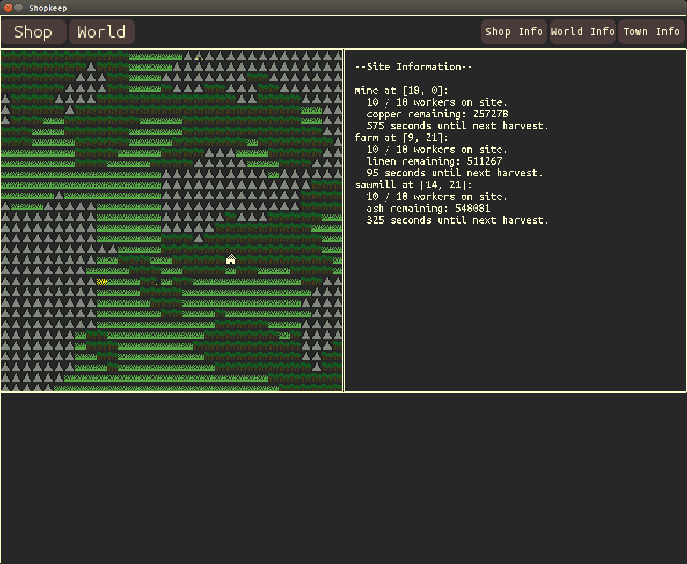
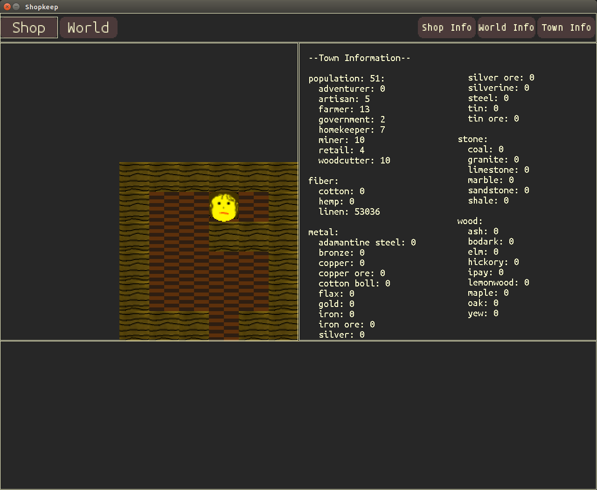
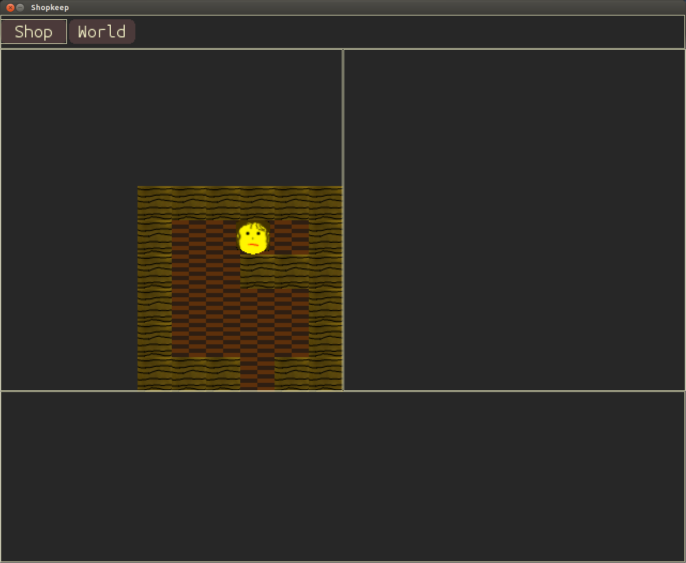
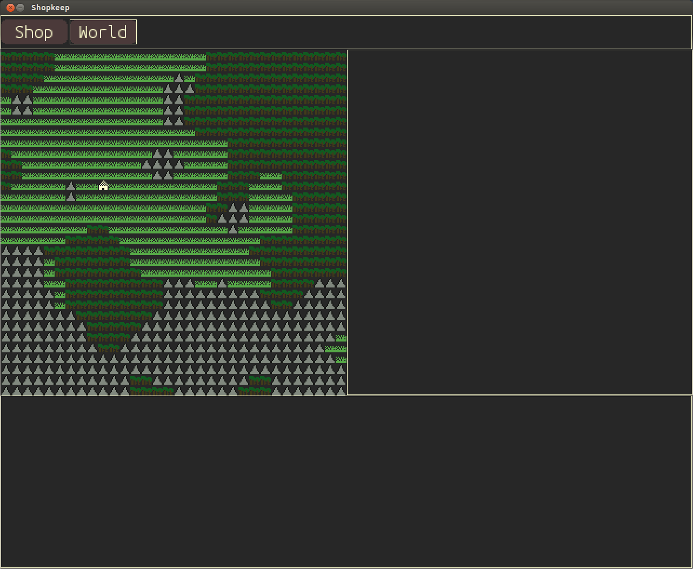
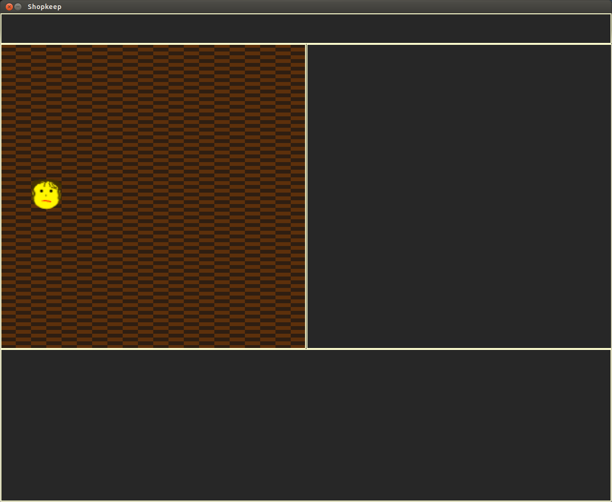

-
05-22-2014
Not only do heroes now exist in the active game world (well, at least the one I put in town at the beginning), but they also get bored and, upon getting bored, seek out adventure at the nearest adventure site! For now I put in one random adventure site in at the game start, so I have little tiles for caves, towers, and dungeons, as well as a universal hero tile; all subject to change, of course. Here's a pic of a hero heading for a cave, having left town:

I suppose the next logical step is to add monsters, fighting, and treasure. Once a hero has enough of that, it can get bored again (assuming it survives) and head back to town, and then I can start on shop interactions!
-
05-21-2014
The info screens are at a decent place, although will surely be revised as devlopment continues. I'll likely have to build in a text scrolling function at some point, as well. A couple of screenshots:


I originally had the game starting with a random number of sites between a certain range, but thought it would be better to always have a copper mine, plus one random farm and one random sawmill, so that's what you see there. It's very nice to see the seconds tick by until the next harvest at a site; the passing of time makes it seem like a real game to me.
I'm having a little hesitation in deciding what to code next. Writing these devlog updates helps, though. Possible candidates include:
- activating town (e.g. changing population, NPC shops, etc.)
- adding adventure sites
- adding adventurers (though probably not in your shop yet)
- adding shop furniture and non-NPC interactions
Adding other shops is necessary before being able to actually acquire resources for yourself, and thereby craft weapons, and it would be wonderful to get those weapons into the game as soon as possible. On the other hand, adventurers should spawn with weapons, and crafting isn't technically necessary to run a shop where people pawn weapons. It might be wise to leave crafting for later. The shopkeep's interactions with adventurers are going to be the core of the game, so I should get that going first.
-
05-19-2014
Sites now exist in the world at game start, and there are even little tiles for mines, farms, and sawmills. They also update per second, as opposed to per frame, which was causing very rapid resource harvesting -- although this at least let me see that resource sites are correctly transforming into other types of sites once they run out of resources. Townsfolk are also employing themselves at open sites, which was nice to see, as I'd already forgotten that I'd coded that.
Working now on information screens. Rendering the appropriate information is easy enough; I just need to decide what information to show, where it should be shown, how it should be organized, how many info buttons there should be, etc. Right now a 'town info' button displays town population and occupations, but I don't want any information screens to be too busy, so this will require some finesse.
-
05-14-2014
We have mouse functionality! Clicking the "Shop" and "World" buttons in the banner section of the screen changes the view accordingly:


So now that I've got a pretty good handle on the graphics stuff, I think the next step is to show town statistics, and then begin to activate things like resource harvesting.
-
05-13-2014
The interface is still coming together. The shop actually has walls now, and the collision detection I made is working just fine, although I realize a little too late that the collision detection native to PyGame sprite objects is probably much more efficient and easier to use, so I will probably move to that system soon. In any case, the shopkeep doesn't move through things she's not supposed to move through, which is nice.
I have decided to finally move my code to my public GitHub repository! Until α.0, it's all just one master branch, although I'll create a dev branch after that. This basically means that I'm happy enough with my code so far to be able to share it with other programmers and potential employers, although I am, of course, still a little nervous about this. But feel free to take a look! Right now all you can do is move the little sprite around with the arrow keys and hover over a couple of not-yet-functional buttons on the banner, but maybe you're easily amused. Or maybe you get your kicks out of refactoring other people's code, in which case, please, feel free to email me your suggestions.
-
05-12-2014
It's been awhile; real life threw a wrench into my coding routine, but it's getting back on track in full force thanks to Hacker School's "alumni week"! It's very nice to be back.
So what's been done in the interim? I believe I've settled on an interface for the game, and it's going to be split into four sections, the middle-left section being the one with all of the action. I don't have many placeholder graphics yet, and the ones I did make are hilariously poorly (and quickly) drawn, but here's a sneak peak so you can imagine what the game will eventually look like:

I hope to have much progress this week, so there will likely be more updates very soon!
-
04-03-2014
Sprites are rendering, and rendering where they're supposed to render. Huzzah!
I know I mentioned a blog post about an algorithm a little while ago. It's still pending. Most of it's written, but my hesitation comes from the very real possibility of someone immediately replying with, "Hey doofus, you just forgot this stupid thing," and having to suffer that embarassment for as long as that post lives in the Book of Internet, which I imagine will be the end of civilization. So I'm taking some time to mull over it. But don't worry; it's still just hanging out in my drafts folder waiting for finishing touches.
-
03-28-2014
Not much in the way of updates, as I've finally gotten around to implementing the display (not just my console display), which means I'm learning how to use PyGame and modifying my existing code to be able to use it as it should be used. Right now I can render text to the screen, and accept and understand keyboard input outside of the console, and that's actually sort of exciting for me. This is my first real experience with drawing to screen, so if you're following this devlog intensely, you're going to have to exercise some patience. I know I'm very interesting, but you'll have to entertain yourselves with my old Facebook status updates or something. There are some pretty cute pictures of our cat somewhere in there.
-
03-24-2014
I have created a function to give value to materials in the town based on supply and demand. The equation for demand will certainly yield hilarious values once I actually start implementing the function, but the important thing is that the numbers used in the equation are able to be changed (both universal constants and constants specific to each material), and so price balance should be achievable. Or maybe I'm just kidding myself and I'll end up setting material prices as constants in bitter defeat. On the other hand, I'm kind of looking forward to the wild variance in prices different towns in different worlds will create.
In other news, despite the fact that it is not needed for α.0 and I'm pretty sure I already declared that I stopped working on it, I slightly improved the world map generation algorithm after a conversation with friend and fellow Hacker School alumn Erty Seidel, who also recommended that I post a screenshot of my gorgeous 3-color ANSI map. For your delight, a couple of screenshots are included below the text of this post.
However... although the algorithm gives me the terrain generation I desire, and although it is perfectly sufficient for the world-size I have in mind for SK... it is still terribly inefficient. And as a programmer who cares about the quality of his work, this eats at my soul. I cannot seem to wrap my head around getting these exact same results without this inefficiency, but I know in my heart it can be done. To that end, I am planning on writing a Fatalist Marksman blog post about this algorithm in the near future, which will hopefully encourage feedback and ideas from the readers, so look out for that soon (I'm thinking next couple of days, if life doesn't get too busy).
I need to add a couple of things to my reference data to make the value generation function work, so I'll get to that quick task next, and then start thinking about the shop itself. Exciting times ahead.
Here's a screenshot of a world map when it still had a small bug in it which I hadn't identified. Yellow tiles are grassland, green are woodland, and white are rockland. Keep in mind that, at some point, there will be actually graphics for these tiles and not just ANSI characters:

And here's one as it's supposed to be. The white-on-black brackets are the town location:

-
03-21-2014
Employees at various sites should now harvest an amount (within a specified range) of resources every so many minutes of game time. The standard coinage for the game will be copper, because copper will be the earliest resource to be able to mine and melt down. I have placeholder functions which can convert the prices from the copper-coin denomination to silver- or gold-coin, all coins being 10 grams in weight. I may start each town with one farm, one sawmill, and one copper mine -- at least for α.0.
This also means that I finally have the concept of game-time. Most game developers probably start there, although I took much intentional deliberation on whether to have most of the events be turn-based (e.g. an amount of copper would be mined every turn) or time-based. Ultimately, I think the latter will just be more fun. And now that I have game "ticks," I think the next thing to address will be the shop and movement around the shop, and for this I may actually implement some placeholder graphics. But I'm not quite done with the economy, so I may finish that and start the shop in parallel; they are not entirely unrelated, and I think the shop may take a good deal of time, so I will need at least one distraction.
And because I'm sort of treating heroes as the "workers" in adventure sites, I've also gotten to the point where heroes battle monsters and leave once the monsters have been slain (assuming they don't die). Battles are currently empty functions, but still, I'm excited about this.
-
03-19-2014
Not a whole lot to report; it's difficult when you only have a very small time to code, and not even every day. I know I seemed gung-ho about tackling monsters, but I realized pretty quickly that fully-fleshed monsters aren't an α.0 necessity. I do have some placeholders, although the monsters have no descriptions yet other than the name (from my name generator) and type, and have no abilities, adding significantly more randomness to the outcome of a potential battle than will be in the final verison.
I got myself back on track with the economy. It's quite multi-faceted, meaning it's easy to get distracted ("Oh, while I'm adding this class to each Hero which represents their individual perception of material pricing, I should also tweak this and add that..."), but I'm going to redouble my efforts in staying focused on getting it minimally working.
Toward that goal, however, towns now get an initial population and people get different occupations as they are added to the town, and there is some logic to that assignment which will surely need changing in the future. But basically, people become farmers until there are enough farmers to theoretically farm enough sites to feed the entire population (even though the only resources you'll see from farmers are non-food-related). Then the rest of the folks look at the sites and see if they have any capacity left (i.e. job openings). Every once in awhile, or if there are no jobs left at the sites, the stragglers are assigned (with weighted randomness) to become housekeepers, artisans, government officials, what-have-you.
Occupations also now value different characteristics of materials. This seems logical, although the only characteristics I'm currently measuring are ones relevant to weapons, so it's likely that when I start calculating values with my made-up table of material requirements for different occupations... I'll get some crazy numbers. But that's okay. Any starting place is as good as another.
But before value can be expressed, we need a unit of measurement, which means I believe I'll be attacking currency next.
-
03-17-2014
Sites (and Structures which exist on those Sites) have been added, meaning, for example, that a copper ore deposit may exist in a rockland tile, and a mine may be built to extract it. The player will not have control over this, but the availability of resources plays a crucial part in the player's success in pricing her items and buying raw materials. The type of resources which populate a site is affected by that resource's rarity, although my current "rarity system" is fairly crude and arbitrary, but I'll see how it plays out. Even if it ends up being effective, I will definitely have to tune the amount of that resource that is potentially harvestable at any site, although I'll probably leave that task for post α.0.
There's some additional fun in there, too. A depleted resource site may turn into an adventure site (e.g. an abandoned mine may become inhabited by monsters), and farmland which has turned fallow is susceptible to a blight of undead monsters, which must be defeated before more resources may be grown there. Very realistic.
This naturally leads me into the next item on the development agenda: Monsters!
-
03-14-2014
I pared down what I'm going to start referring to as the BDOM ("Big Dictionary Of Materials"), only because a few of the things I thought would be cool and make sense to include ended up having very little information about them available -- at least that I could find. I suppose I could make values up arbitrarily (and I have done so for a couple of the more fantastic elements), although I like that they are relatively realistic. One could argue that some of the materials would be anachronistic, but I'd argue that just because they weren't abundant in Europe in the 1400s doesn't mean they didn't exist anywhere.
I also created a function to procedurally generate the world terrain (i.e. the land around your town where the resource and adventuring sites will exist). I was surprised at how much trouble I had trying to find an algorithm for the very simple 2D generation and simple patterns I wanted, so I ended up hammering out my own algorithm. It's very inefficient, but it's not a big map, and it only needs to be created once when starting a new game (takes a couple of seconds, but should probably take a fraction of a second). Regardless, I'm sure I won't be able to help myself from improving it.
The coolest thing for me was being able to feed the world map to the console mapping function I wrote very early on, and actually seeing the world in colored ANSI tiles. Shopkeep technically has graphics now.
-
03-12-2014
Recent coding plans thwarted by a foolish assumption in free wifi at a designated location between work and another scheduled event. This might be for the best, as it's given me opportunity to seriously mull over SK's economy and to say some of these ideas out loud (or over a chat client). Was toying with the idea of giving each material an intrinsic value based on objective characteristics, but I think I'm abandoning that for value based on pure demand. What that means is that I need to create demand that comes not only from the shopkeep and her customers, but the entire town, which means the game will keep track of some general census information. I think it will consist only of a list of occupations, the number of townsfolk in each of those occupations, and what the material demands of each occupation are. These may fluctuate slightly here and there, but large economic shifts will occur when populations grow, opportunities for harvesting different resources appear, and people leave one occupation for another en masse.
This sounds more complicated than I believe it will be to program; I think it will actually be pretty fun. It's also vital to building an economy, which is vital to the price of weapons and their materials, which is a necessary part of v.α.0. Although I could set prices semi-randomly and get α.0 out that much earlier, I would not feel comfortable letting anyone play any version of the game without that key feature.
But no matter if prices are set based on the intrinsic value of material traits or the demand for material traits, I'm still going to have to do (and have already done) a moderate amount of what the kids call "yak-shaving." I don't, however, need to research and fill in the characterstics for any large number of materials; the few I've put in the game so far will be more than adequate.
On that note, did you know that there is an online Wood Database? And that it's awesome? Information about rocks seems to be a little more difficult to find...
-
03-10-2014
Adjusted a couple of things here and there, but mostly did some serious thinking about what to attack next, how to attack it, and what the bare-bones skeleton of a playable version of the game requires. I'm going to strive for what I'm thinking of as v.α.0, which someone will actually be able to play, although it won't look like much and it may not be very fun yet. Still, I think it's important to have something if only for the sake of better clarity regarding what to improve.
To that end, the player object now has some actual attributes, the world map has a grid, heroes have a location (and also now make use of the name creator function upon generation), and I believe I'll be working on my economic model next, which should be interesting.
-
03-07-2014
The assemble() function is fully functional! Or at least, it works perfectly for all of the template sets of components I feed to it right now. Hopefully it will continue to operate as intended as more templates are added to my master list, and I will be very excited to test scenarios where I hand it random components and see what kind of weapons it makes. That's not a pressing issue, however.
The first version of the name generator is also complete. I'll likely tweak it here and there in the future, but for the time being, here are the sorts of names you might expect for generated heroes:
Viakic | Asne | Smok | Erwiap | Eth | Shea | Ittu | Efkry | Deam | An | Ed | Wia | Ixchi | Ig | Echgool | Cha | Bir | Gelic | Eck | Amtrohm | Keaukrash | Thymfi | Ef | Il | Ixest
and for monsters:
Ouqu | Keaukwoedsluengs | Smophskre | Oschid | Vuopluo | Chroothaefs | Euksongsphreau | Auscuph | Skraps | Spliochmoh | Jescsvyquue | Ob | Odge | Ghaebssvio | Khrofaip | Ey | Khreorngecksveedge | Uz | Aidgeschrae | Waiaatheasch | Kloeaudoask | Fryk | Oalszui | Eungsfribsidges | Oms
I think there's plenty of room to make the names a little more idiosyncratic, so that someone might be able to say, "Hey, that sounds like a name from 'Shopkeep'," but it definitely serves its purpose for the time being.
I think I've also made the decision that the shopkeep will be nameless, and be female. Maybe I should have saved that announcement for International Women's Day (edit) tomorrow -- which I've never heard of before but it's apparently a big thing this year -- but shouldn't every day be International Women's Day? In contrast, heroes and monsters will be genderless, but have names.
-
03-06-2014
I got my function which assembles components into weapons to work almost perfectly, although it still malfunctions when it comes across a joint type I haven't yet addressed which can result in a two-headed flail comprised of a handle, two chains coming off of that handle, and two balls coming off of one of the chains. But I should be able to fix that soon.
Even though it's certainly not necessary at this early stage, I thought it would be fun to start on my name generator for heroes and monsters. I actually don't think that will take too long to finish, and I'm really just using it to focus on something other than weapon component joints when I need a break.
-
03-05-2014
Although I programmed myself into a corner trying to figure out how to assign these Joint objects to their appropriate Component objects, I believe this has ultimately led to an unintended innovation. Rather than assemble components with joints into a weapon using a predetermined weapon type template, I have created component classes which know that they are only able to have connections to other specific classes. In this way, if this works the way I think it will, my function which assembles components into weapons will simply take whatever components I give it and connect the pieces in a way that makes sense. Once it's been created, I'll make a function that identifies it as a sword, axe, bow, what-have-you.
This way of doing things paves the road for all sorts of possibilities as I add more components to the master list. What sorts of things would you like to attach to the ends of the flails you make? How many axe blades would you like to attach to your elm haft? Will have to start thinking about upper limits, and start adding some density to materials and volume to components.
-
03-04-2014
I've created joints to join the different components of a weapon. Once a joint is destroyed, the weapon would fall apart. I ran into some trouble in actually attaching joints to their appropriate components, which I plan on resolving in the next couple of days. I may need to rethink part of my weapon system to account for partial weapons (e.g. a flail with a handle and chain but a missing ball).
What's perhaps more exciting, however, is that I've created a rudimentary Hero class embodying personality, experience, and perceptions. Right now personality is composed of eight different traits, many of which will be applicable in battle, but all of which will play into the hero's decision-making while at your shop. And although the shopkeep herself has no inherent personality traits (you get to play her however you wish), each hero contains its own instance of how it perceives the shopkeep's personality, which will not only affect how the hero interacts with you but also what the hero will tell others about you, affecting your overall reputation.
I also laid the basic foundation for the player class and the economy class. Each hero will also hold its own instance of a perceived economy, meaning scenarios could come into play where you could convince an out-of-towner that a weapon made of copper is actually immensely valuable.
Going to finish joints and add a little more to the weapons class next, and then on to filling in the player class.
-
03-02-2014
As usual, not nearly as much time to code on my set-aside "coding day," but even so, it is immensely satisfying. Today I successfully created a weapon class, with each weapon being composed of several components, each of which being composed of a material. I had to create a foundation for my dictionaries of possible weapon types, components, and materials, and so my first successful attempt at using my Weapon().generate() function made a shortsword with an ash hilt, a steel blade, and a bronze scabbard. At this point, the dictionaries only have a meager number of material, component, and weapon options (okay, truthfully, it only makes shortswords right now), but even so, my second generation manifested a sword with a hickory hilt, steel blade, and ash scabbard. Adding new weapons and components at this point is just a matter of data entry.
Now that the basis for the existence of weapons is in place, it's time to make heroes... Oh, and the player herself, I suppose.
-
02-25-2014
Haven't had much time to code in the past couple of days, but I did manage to write the basic save/load/new game functions, although I'll be adding most of the vital game information libraries as I go. I've been thinking a lot about how to store this information, and feel comfortable enough to move forward.
Still heavily mulling over gameplay functionality, display, and UI. I pretty much just now remembered that it might be a good idea to be able to use a mouse, rather than having just keyboard input. Perhaps I could model the gameplay after Fallout 1 & 2 (but with very different graphics and many more and better interaction menus/windows).
-
02-23-2014
Intended to spend most of the day coding parts of the game, but spent more time than anticipated creating a piece of pixel art (the 64 x 64px tile which now graces the background of this website). Although this was my first real experience in creating pixel-art, and it was actually a lot more fun and successful than I'd anticipated. I may want to employ this method to some extent in creating sprites for SK, so it was time well spent. I also launched this website, obviously, and spent just enough time on it for it to be passable; at some point in the not-too-distant future I'll probably bootstrap it with a custom theme, add some js libraries and automation (right now I'm directly editing the html), and give it some relative sizing options (because it doesn't look great on my phone). I'm also open to style suggestions.
I was able to get a little bit of game coding done, too, adding a Menu class to store relevant data for any menu in the game, and small function to display and execute that data which will change once I add graphics. The point is that the menu classes won't need to change, so I can feel comfortable coding that stuff without worrying about the possibility of having to scrap it all later.
-
02-22-2014
Today I started working on some pixel art, which will become the background for this dev log page. It was also meant to be an experiment in my creating pixel art... and it was pretty fun. I may hand draw the sprites in a very simple pixellated way.
-
02-20-2014
"Shopkeep" (SK) is a single-player simulation game with RPG elements, in which the player's character (PC) owns and operates a weapon shop in a medieval fantasy (~1400 AD) town.
"Dwarf Fortress" is my primary inspiration regarding the development of game mechanics, but the idea for the game itself came from a misunderstanding from the (still in early-access) game "Towns." Towns is a very cool game, and I hope it continues to be developed, but my comprehension of whatever description I read about the game before I purchased it did not match the game itself. The premise of Shopkeep is my attempt realize that concept which I happily fabricated.
I have many decisions to make about the game, both technically and artistically, and I'll use this space to rubber-duck some of those thoughts, and make it public at some point if only for the sake of receiving constructive feedback.
-- Running a shop? How is that fun? --
Imagine an adventurer coming in and buying a really nice axe, spending all her money on it because she wants to go fight a dragon and knows she'll either die or come back with untold riches. Then later another adventurer comes in and buys various ranged weapons, intending to seek his fortune but at a safe distance. Then another one comes in, the stealthy type and a bit more experienced, and just buys a new dagger. A few days later, the third adventurer comes back and says, "Hey... what'll you give me for this nice axe and these throwing weapons I found by some mauled corpses in the dragon's lair?"
Pretty much all the action occurs within the shop. The PC doesn't go adventuring, doesn't have a dexterity score or hit points, and can't die. Rather than going out there and risking her neck for a piece of gold, she lets the gold come to her. The world will contain heroes and adventuring aplenty... but it all occurs off-screen.
A fantasy-setting weapon is more than just an economic commodity, and this will be reflected in each item's history. If a weapon manages to be sold back to the shop after changing hands several times, it may very well have been owned by some famous heroes, have killed some legendary monsters, and been a part of some dramatic event which storytellers will be narrating for centuries. And while it's awesome to know that your shop displays the iron flail which Sir Soandsuch used to crush the skull of the great red dragon which had once terrorized the countryside... imagine how much someone would pay for such a thing. Or maybe you can just tell the poor sucker that it's the same sword; maybe they'll be gullible enough to believe you. Or maybe they live in town and, upon realizing your charade, hire some local thugs to do some damage to your lovely storefront.
I have a lot planned, and that's just the start of it -- enough so you know what this game is all about. I think it best to reveal more as I code it.
-- Technical Stuff --
After sufficient deliberation, I have decided to code the game in Python. Although a compiled language would result in a "faster" game, I do not anticipate anything that will result in a struggling FPS rate. This is a pet project, and while I use Visual Studio and C# in my day job, I'd rather unwind with a little Python on my personal time. Python's just more fun, I don't have to fuss with an IDE, and I'm fairly familiar with it already. That said, I plan to take pains to keep parts of the game distinct from one another, in case I decide to use something else, for example, to render graphics.
Speaking of graphics, SK will be 2-D top-down. I mentioned that I'm a Dwarf Fortress fan, and that includes the Code Page 437 tileset. I'm not a graphics person, so while in development SK is going the same route and simply printing ANSI characters to the console. I am not certain if I want the game to be tile-based (e.g. Dwarf Fortress, early Final Fantasy games) or more free-form, although right now I am leaning toward a Legend of Zelda feel where there are fixed tile-like sprites on a grid which the PC and any NPCs may fluidly navigate around. But this is not an action/adventure game, and the means in which actions are taken would be a flourish, not a feature; so for the time being I can simply code in text-based menus and worry about the visuals later.
|